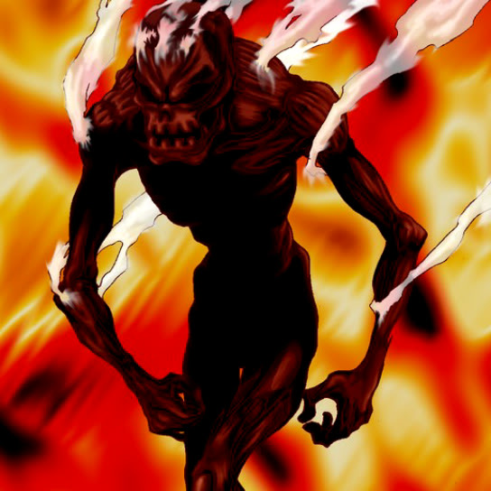

Flame Ghost

Description: "When this card is flipped face-up, all cards located in Sea terrain are destroyed."
STATS
ATK: 1000
DEF: 800DECK COST
Deck Cost per Card: 23EFFECT NOT IMPLEMENTED
Fusion List (48 Possible Fusions)
- Flame Ghost + Abyss Flower = Pumpking the King of Ghosts
- Flame Ghost + Ancient Jar = Stone Ghost
- Flame Ghost + Arlownay = Pumpking the King of Ghosts
- Flame Ghost + Armaill = Zombie Warrior
- Flame Ghost + Armed Ninja = Zombie Warrior
- Flame Ghost + Axe Raider = Flame Swordsman
- Flame Ghost + Burglar = Flame Cerebrus
- Flame Ghost + Celtic Guardian = Armored Zombie
- Flame Ghost + Crawling Dragon #2 = Skelgon
- Flame Ghost + Crow Goblin = Crimson Sunbird
- Flame Ghost + Dark Plant = Pumpking the King of Ghosts
- Flame Ghost + Darkfire Dragon = Dragon Zombie
- Flame Ghost + Dragon Zombie = Skelgon
- Flame Ghost + Droll Bird = Mavelus
- Flame Ghost + Fiend Sword = Armored Zombie
- Flame Ghost + Firegrass = Pumpking the King of Ghosts
- Flame Ghost + Flame Manipulator = Magical Ghost
- Flame Ghost + Haniwa = Stone Ghost
- Flame Ghost + Hard Armor = Zombie Warrior
- Flame Ghost + Hero of the East = Zombie Warrior
- Flame Ghost + Hyo = Zombie Warrior
- Flame Ghost + Kagemusha of the Blue Flame = Zombie Warrior
- Flame Ghost + Kurama = Mavelus
- Flame Ghost + Laughing Flower = Pumpking the King of Ghosts
- Flame Ghost + Little Chimera = Flame Cerebrus
- Flame Ghost + Lucky Trinket = Magical Ghost
- Flame Ghost + M-Warrior #1 = Zombie Warrior
- Flame Ghost + M-Warrior #2 = Zombie Warrior
- Flame Ghost + Man Eater = Pumpking the King of Ghosts
- Flame Ghost + Masked Clown = Zombie Warrior
- Flame Ghost + Master & Expert = Flame Cerebrus
- Flame Ghost + Milus Radiant = Flame Cerebrus
- Flame Ghost + Muka Muka = Stone Ghost
- Flame Ghost + Mushroom Man = Pumpking the King of Ghosts
- Flame Ghost + Obese Marmot of Nefariousness = Flame Cerebrus
- Flame Ghost + One-Eyed Shield Dragon = Dragon Zombie
- Flame Ghost + Pot the Trick = Stone Ghost
- Flame Ghost + Queen's Double = Zombie Warrior
- Flame Ghost + Rainbow Flower = Pumpking the King of Ghosts
- Flame Ghost + Sectarian of Secrets = Magical Ghost
- Flame Ghost + Skelgon = Curse of Dragon
- Flame Ghost + Skull Red Bird = Crimson Sunbird
- Flame Ghost + Sword Arm of Dragon = Curse of Dragon
- Flame Ghost + Swordsman from a Foreign Land = Zombie Warrior
- Flame Ghost + Tentacle Plant = Pumpking the King of Ghosts
- Flame Ghost + The Bewitching Phantom Thief = Magical Ghost
- Flame Ghost + Torike = Flame Cerebrus
- Flame Ghost + Yashinoki = Pumpking the King of Ghosts